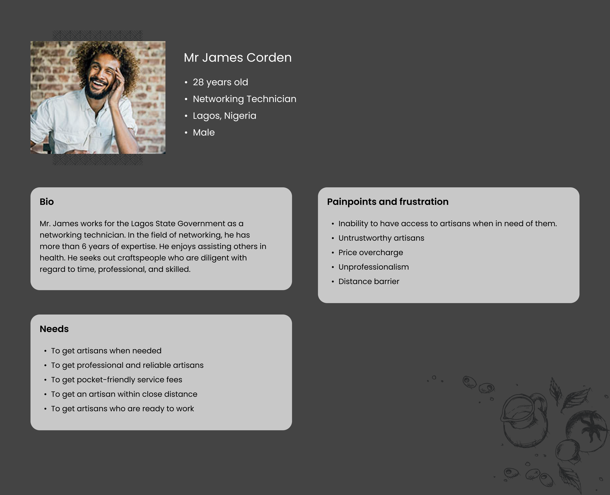

Bunu App Design

The work presented here is a project I completed as a freelance designer for a client. I want to assure you that I take client confidentiality seriously and respect the terms of our agreement. I have received explicit permission from my client to showcase this project in my portfolio as an example of my work.
Project Overview
Bunu is a mobile app that connects skilled artisans in Nigeria with clients who are nearby. These artisans will provide services like plumbing, electrical engineering, auto mechanics, etc. The common artisans in Nigerian states are anticipated to be listed in this app's database.
User Personas
For Client Fig 1.1
For Artisan Fig 1.2
Problem Statement
The challenge with existing artisan service apps is the lack of efficient user-artisan connections. Users struggle to discover skilled artisans nearby, leading to delayed service requests. Our goal is to create an artisan app that streamlines these connections, making it easier for users to find and hire local artisans promptly.
Target Audience
The age group for both users and artisans can vary widely, but it's typically within the range of 18 to 65+ years. People of various ages may require artisan services, and artisans themselves can range from younger individuals to experienced professionals. I made it essential to ensure that the app's user interface and user experience cater to a broad age demographic by considering usability and accessibility for all potential users.
The target audience for your artisan mobile app would likely include:
- Users Seeking Artisan Services: These are individuals or businesses in need of various services such as plumbing, electrical work, carpentry, painting, etc.
- Artisans and Service Providers: This group comprises the artisans themselves who offer their skills and services through the app.
Task Flow
The task flow guides users through the process of discovering, hiring, and reviewing artisans using your mobile app, ensuring a smooth and efficient experience.

How to contact Artisan on the App Fig 2.1

Connecting with clients on the App Fig 2.2
Wireframe
In the wireframe section, I dive into the structural foundation of our artisan app. These simplified, grayscale visual representations helps me outline the app's layout, features, and user flow, setting the stage for a well-structured and user-friendly design.
Wireframe Fig 3.1
Onboarding
The Average App Loses ~77% Of Its Users In The First Three Days
The goal of the on-boarding is to guide the users through a seamless journey to set up their profiles and start connecting with local artisans effortlessly.
Onboarding Screens Fig 4.1
Sign Up Process
This is is the first impression of our app. We want it to reflect what we stand for: The minimalistic, clean and fresh aesthetic.
We allowed quick sign up from Facebook and Twitter as they don’t really need to fill up the same information. Based on feedback from friends, I brought in email sign ups as well, but I kept it secondary.
Signing up as a client Fig 5.1
Signing up as an Artisan/Organization Fig 5.2
Log In Process
This is is the first impression of our app. We want it to reflect what we stand for: The minimalistic, clean and fresh aesthetic.
We allowed quick login from Facebook and Twitter as they don’t really need to fill up the same information. Based on feedback from friends, I brought in email sign ups as well, but I kept it secondary.
Log In process Fig 6.1
App Prototype
I present a comprehensive, interactive model of bunu artisan app. This prototype simulates the entire user journey, offering a hands-on experience of the app's functionality, design, and flow.
Website View
In this section, I explore how bunu artisan app seamlessly extends to the web, offering users the convenience of accessing the platform on a larger screen. This responsive web design ensures a consistent and accessible experience across various devices, enhancing user reach and engagement.

Website View Fig 7.1
Admin Panel
In this section, Is the backbone of bunu artisan app's management and oversight. This secure and efficient interface empowers administrators to monitor user interactions, ensure the platform's integrity, and provide support where needed, facilitating a smooth and reliable user experience.
Admin Panel Fig 8.1
Color Palette
Designing a beautiful interface is as important as designing the best flow. We wanted to keep the entire design minimal, clean, and fresh.
We knew we needed blue in our primary palette. not just because we all liked blue. The colour helps in improving the flow of communication and we believe it is really important for us, as we are placing our self as the premier application for sourcing artisans.
The next step was to find out the best and unique blue. It should represent our brand, Bunu. It should also be different from Facebook, Twitter and any other app colours.
Color Palette Fig 9.1
In conclusion, Bunu mobile app is the result of a dedicated team's effort to bridge the gap between users and skilled artisans. By focusing on user-friendly design, efficient communication, and a streamlined review process, we aim to enhance the experience for both those seeking services and the artisans offering them. The goal is to create a community that values transparency, trust, and quality service. I'm excited about the future of this platform and look forward to continually improving it based on user feedback and evolving needs. I built a reliable solution that connects users with artisans, making service discovery and hiring hassle-free.